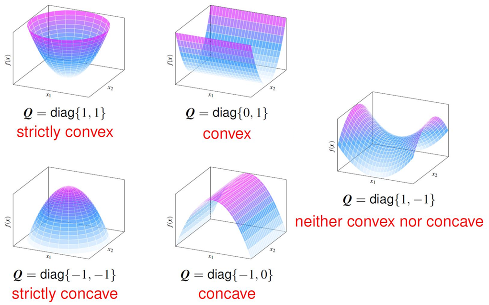
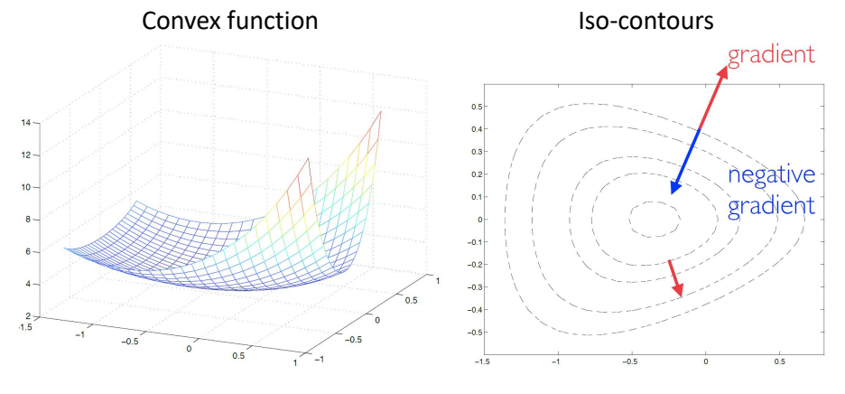
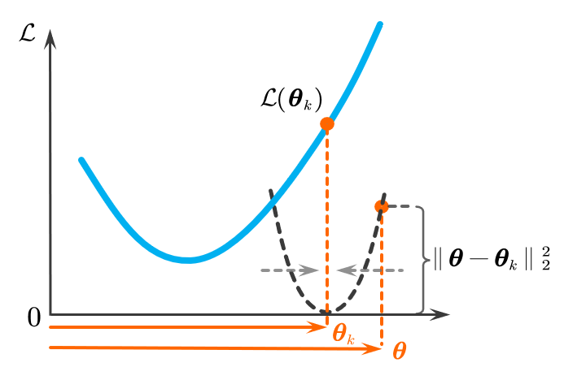
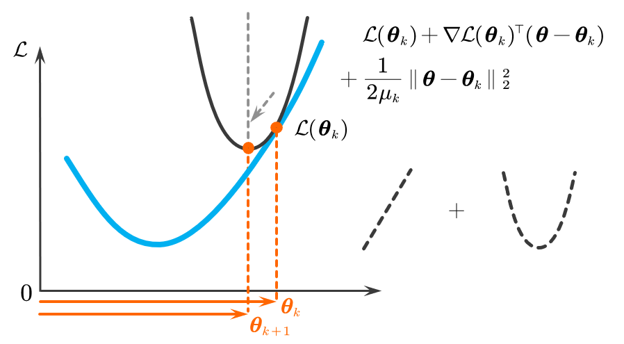

凸优化 当我们想在 d d d 维空间中找到一个参数向量 θ \boldsymbol{\theta} θ ，使得目标函数 (Objective Function) L ( θ ) \mathcal{L}(\boldsymbol{\theta}) L ( θ ) 的值最小，可以用以下优化问题来表示： min θ ∈ R d L ( θ ) \min_{\boldsymbol{\theta} \in \mathbb{R}^d} \mathcal{L}(\boldsymbol{\theta}) θ ∈ R d min L ( θ ) 其中， L \mathcal{L} L 通常是 损失函数 (Loss Function) 或 成本函数 (Cost Function) 。 凸优化问题 ：如果目标函数 L ( θ ) \mathcal{L}(\boldsymbol{\theta}) L ( θ ) 是一个 凸函数 (Convex Function) ，那么这个优化问题就是一个 凸优化问题 。否则，它就是非凸优化问题 (Nonconvex Optimization)。 凸函数 (Convex Function) 在优化问题中，我们常常希望找到一个函数的最小值。函数的“形状”决定了寻找最小值的难度。凸函数具有一种非常理想的“碗状”几何结构，这使得寻找其最小值变得非常简单直接。
凸函数的定义 一个函数是否为凸函数，其最根本的判断标准来自于它的几何形状。
一个函数 L : R d → R \mathcal{L}:\mathbb{R}^d\to\mathbb{R} L : R d → R 是 凸函数 ，如果对于其定义域中的任意两个点 θ \boldsymbol{\theta} θ 和 w \boldsymbol{w} w ，以及对于任意一个介于 0 和 1 之间的数 α \alpha α (即 α ∈ [ 0 , 1 ] \alpha\in[0,1] α ∈ [ 0 , 1 ] )，都满足下面的不等式： L ( α θ + ( 1 − α ) w ) ≤ α L ( θ ) + ( 1 − α ) L ( w ) \mathcal{L}(\alpha\boldsymbol{\theta}+(1-\alpha)\boldsymbol{w})\leq\alpha\mathcal{L}(\boldsymbol{\theta})+(1-\alpha)\mathcal{L}(\boldsymbol{w}) L ( α θ + ( 1 − α ) w ) ≤ α L ( θ ) + ( 1 − α ) L ( w ) 不等式左边： α θ + ( 1 − α ) w \alpha\boldsymbol{\theta}+(1-\alpha)\boldsymbol{w} α θ + ( 1 − α ) w 是连接输入点 θ \boldsymbol{\theta} θ 和 w \boldsymbol{w} w 的线段上的一点。因此， L ( α θ + ( 1 − α ) w ) \mathcal{L}(\alpha\boldsymbol{\theta}+(1-\alpha)\boldsymbol{w}) L ( α θ + ( 1 − α ) w ) 代表的是函数曲线上对应点的实际高度。 不等式右边： α L ( θ ) + ( 1 − α ) L ( w ) \alpha\mathcal{L}(\boldsymbol{\theta})+(1-\alpha)\mathcal{L}(\boldsymbol{w}) α L ( θ ) + ( 1 − α ) L ( w ) 是对两个函数值 L ( θ ) \mathcal{L}(\boldsymbol{\theta}) L ( θ ) 和 L ( w ) \mathcal{L}(\boldsymbol{w}) L ( w ) 的加权平均。这恰好是
连接函数图像上两点 ( θ , L ( θ ) ) \left(\boldsymbol{\theta},\mathcal{L}(\boldsymbol{\theta})\right) ( θ , L ( θ ) ) 和 ( w , L ( w ) ) \left(\boldsymbol{w},\mathcal{L}(\boldsymbol{w})\right) ( w , L ( w ) ) 的直线（我们称之为"弦”）上对应点的高度。
因此，这个不等式的几何含义是： 函数图像上 任意两点之间的弦 ，总是位于 这两点之间的函数曲线 的上方（或与之重合） 。这种“上凸”或“向上弯曲”的特性是所有凸函数的共同点。
L ( θ ) = θ 2 \mathcal{L}(\theta)=\theta^2 L ( θ ) = θ 2 ：这是一个开口向上的抛物线，完美符合"碗状"结构。 L ( θ ) = ∣ θ ∣ \mathcal{L}(\theta)=|\theta| L ( θ ) = ∣ θ ∣ ：这是一个 L ( θ ) = ∥ θ ∥ 2 \mathcal{L}(\boldsymbol{\theta})=\|\boldsymbol{\theta}\|^2 L ( θ ) = ∥ θ ∥ 2 ：这是多维空间中的一个"抛物碗”,也是凸的。 凸函数的一阶充要条件 如果一个函数是可微分的，那么我们可以通过它的切线（在多维空间中是切平面）来判断其凸性。这为我们提供了一个更具分析性的工具。
数学定理 ：假设函数 L \mathcal{L} L 是可微分的。那么 L \mathcal{L} L 是凸函数的充要条件是，对于其定义域中的任意两点 θ \boldsymbol{\theta} θ 和 w \boldsymbol{w} w ,都满足以下不等式： L ( w ) ≥ L ( θ ) + ∇ L ( θ ) ⊤ ( w − θ ) \mathcal{L}(\boldsymbol{w})\geq\mathcal{L}(\boldsymbol{\theta})+\nabla\mathcal{L}(\boldsymbol{\theta})^\top(\boldsymbol{w}-\boldsymbol{\theta}) L ( w ) ≥ L ( θ ) + ∇ L ( θ ) ⊤ ( w − θ ) 不等式右边 ： L ( θ ) + ∇ L ( θ ) T ( w − θ ) \mathcal{L}(\boldsymbol{\theta})+\nabla\mathcal{L}(\boldsymbol{\theta})^T(\boldsymbol{w}-\boldsymbol{\theta}) L ( θ ) + ∇ L ( θ ) T ( w − θ ) 是函数 L \mathcal{L} L 在点 θ \boldsymbol{\theta} θ 处的 一阶泰勒展开 。在几何上，它所描述的正是 穿过点 ( θ , L ( θ ) ) (\boldsymbol{\theta},\mathcal{L}(\boldsymbol{\theta})) ( θ , L ( θ )) 的那条切线（或切平面） 。 不等式左边 ： L ( w ) \mathcal{L}(\boldsymbol{w}) L ( w ) 是函数在点 w \boldsymbol{w} w 处的 真实值 。 因此，这个不等式的几何含义是： 对于一个凸函数，其在 任何一点上的切线 都位于 整个函数图像 的下方（或与之重合） 。
换句话说，这条切线构成了对整个函数的一个 全局下界 (global underestimator) 。
在非凸函数中，梯度为零的点可能是局部最小值、局部最大值，甚至是鞍点。我们无法保证它是最好的解。但在凸函数的世界里，情况变得异常简单。
我们利用一阶条件的不等式。假设我们在某一点 θ ∗ \boldsymbol{\theta}^* θ ∗ 处发现梯度为零，即 ∇ L ( θ ∗ ) = 0 \nabla\mathcal{L}(\boldsymbol{\theta}^*)=\mathbf{0} ∇ L ( θ ∗ ) = 0 。将这个条
件代入这个一阶不等式（此时令 θ = θ ∗ \boldsymbol{\theta}=\boldsymbol{\theta}^* θ = θ ∗ ）： L ( w ) ≥ L ( θ ∗ ) + ∇ L ( θ ∗ ) ⊤ ( w − θ ∗ ) L ( w ) ≥ L ( θ ∗ ) + 0 ⊤ ( w − θ ∗ ) L ( w ) ≥ L ( θ ∗ ) \begin{aligned} \mathcal{L}(\boldsymbol{w}) &\ge \mathcal{L}(\boldsymbol{\theta}^*) + \nabla \mathcal{L}(\boldsymbol{\theta}^*)^\top (\boldsymbol{w} - \boldsymbol{\theta}^*) \\ \mathcal{L}(\boldsymbol{w}) &\ge \mathcal{L}(\boldsymbol{\theta}^*) + \boldsymbol{0}^\top (\boldsymbol{w} - \boldsymbol{\theta}^*) \\ \mathcal{L}(\boldsymbol{w}) &\ge \mathcal{L}(\boldsymbol{\theta}^*) \end{aligned} L ( w ) L ( w ) L ( w ) ≥ L ( θ ∗ ) + ∇ L ( θ ∗ ) ⊤ ( w − θ ∗ ) ≥ L ( θ ∗ ) + 0 ⊤ ( w − θ ∗ ) ≥ L ( θ ∗ ) 这个推导结果表明，对于定义域中的 任意点 w \boldsymbol{w} w ，它的函数值 L ( w ) \mathcal{L}(\boldsymbol{w}) L ( w ) 永远不会比 L ( θ ∗ ) \mathcal{L}(\boldsymbol{\theta}^*) L ( θ ∗ ) 还小。这正是 全局最小值 的定义。 这个特性是凸优化问题能够被高效、可靠求解的基石。它意味着，像 梯度下降法 这样的算法，只要能找到一个梯度为零的点，就等于找到了全局最优解。例如，在线性回归（Least Squares）问题中，其损失函数是凸的，所以我们通过求解梯度为零的方程就能直接得到最优的回归参数。
凸函数的二阶充要条件 对于一个足够平滑（即二阶连续可微）的函数，我们可以通过其二阶导数来分析它的“弯曲”特性，从而判断其是否为凸函数。这是一种在实践中非常强大和常用的方法。
数学定理： 假设函数 L : R d → R \mathcal{L}:\mathbb{R}^d\to\mathbb{R} L : R d → R 是二阶连续可微的。那么， L \mathcal{L} L 是凸函数的充要条件是，它的 Hessian ∇ 2 L ( θ ) \nabla^2\mathcal{L}(\boldsymbol{\theta}) ∇ 2 L ( θ ) 在其定义域的所有点 θ \boldsymbol{\theta} θ 上都是 半正定的 (Positive Semidefinite, PSD) 。 Hessian ∇ 2 L ( θ ) \nabla^2\mathcal{L}(\boldsymbol{\theta}) ∇ 2 L ( θ ) ： ∇ 2 L ( θ ) = [ ∂ 2 L ∂ θ 1 2 ∂ 2 L ∂ θ 1 ∂ θ 2 ⋯ ∂ 2 L ∂ θ 1 ∂ θ d ∂ 2 L ∂ θ 2 ∂ θ 1 ∂ 2 L ∂ θ 2 2 ⋯ ∂ 2 L ∂ θ 2 ∂ θ d ⋮ ⋮ ⋱ ⋮ ∂ 2 L ∂ θ d ∂ θ 1 ∂ 2 L ∂ θ d ∂ θ 2 ⋯ ∂ 2 L ∂ θ d 2 ] \nabla^{2}\mathcal{L}(\boldsymbol{\theta})=\left[\begin{array}{cccc}\frac{\partial^{2}\mathcal{L}}{\partial\theta_{1}^{2}} & \frac{\partial^{2}\mathcal{L}}{\partial\theta_{1}\partial\theta_{2}} & \cdots & \frac{\partial^{2}\mathcal{L}}{\partial\theta_{1}\partial\theta_{d}} \\\frac{\partial^{2}\mathcal{L}}{\partial\theta_{2}\partial\theta_{1}} & \frac{\partial^{2}\mathcal{L}}{\partial\theta_{2}^{2}} & \cdots & \frac{\partial^{2}\mathcal{L}}{\partial\theta_{2}\partial\theta_{d}} \\\vdots & \vdots & \ddots & \vdots \\\frac{\partial^{2}\mathcal{L}}{\partial\theta_{d}\partial\theta_{1}} & \frac{\partial^{2}\mathcal{L}}{\partial\theta_{d}\partial\theta_{2}} & \cdots & \frac{\partial^{2}\mathcal{L}}{\partial\theta_{d}^{2}}\end{array}\right] ∇ 2 L ( θ ) = ⎣ ⎡ ∂ θ 1 2 ∂ 2 L ∂ θ 2 ∂ θ 1 ∂ 2 L ⋮ ∂ θ d ∂ θ 1 ∂ 2 L ∂ θ 1 ∂ θ 2 ∂ 2 L ∂ θ 2 2 ∂ 2 L ⋮ ∂ θ d ∂ θ 2 ∂ 2 L ⋯ ⋯ ⋱ ⋯ ∂ θ 1 ∂ θ d ∂ 2 L ∂ θ 2 ∂ θ d ∂ 2 L ⋮ ∂ θ d 2 ∂ 2 L ⎦ ⎤ Hessian 矩阵 ∇ 2 L ( θ ) \nabla^2\mathcal{L}(\boldsymbol{\theta}) ∇ 2 L ( θ ) 半正定 的数学表达为： d ⊤ ∇ 2 L ( θ ) d ≥ 0 ∀ d ∈ R d , ∀ θ ∈ R d . \boldsymbol{d}^\top\nabla^2\mathcal{L}(\boldsymbol{\theta})\boldsymbol{d}\geq0\quad\forall ~ \boldsymbol{d}\in\mathbb{R}^d,\quad\forall ~ \boldsymbol{\theta}\in\mathbb{R}^d. d ⊤ ∇ 2 L ( θ ) d ≥ 0 ∀ d ∈ R d , ∀ θ ∈ R d . 从一维到多维 ：在一维情况下，这个定理退化为我们所熟知的结论：函数 f ( θ ) f(\theta) f ( θ ) 是凸函数的条件是其二阶导数 f ′ ′ ( θ ) ≥ 0 f^{\prime\prime}(\theta)\geq0 f ′′ ( θ ) ≥ 0 。二阶导数代表函数图像的“曲率”。非负的二阶导数意味着函数的斜率永不减小，因此函数曲线总是向上弯曲或呈直线。 Hessian 矩阵的角色 ：在多维空间中，Hessian 矩阵扮演了二阶导数的角色。它是一个包含了所有二阶偏导数的矩阵，描述了函数在某一点附近沿 所有方向 的曲率信息。 半正定的意义 ：表达式 d ⊤ ∇ 2 L ( θ ) d \boldsymbol{d}^\top\nabla^2\mathcal{L}(\boldsymbol{\theta})\boldsymbol{d} d ⊤ ∇ 2 L ( θ ) d 描述了函数在点 θ \boldsymbol{\theta} θ 处，沿着方向向量 d \boldsymbol{d} d 的曲率。条件要求这个值对于 任意方向 d \boldsymbol{d} d 都必须大于等于零。这意味着，无论在函数图像的哪一点，并朝任何一个方向移动一定距离，路径都是 向上弯曲 或者 平坦 的，不会找到一个“向下弯曲”的方向。这完美地刻画了一个“碗状”或“盆状”的几何形态。 在实践中，要判断一个矩阵是否为半正定，最常用的方法是计算它的所有 特征值 (Eigenvalues) 。如果所有特征值都非负，那么该矩阵就是半正定的。
典型凸函数实例 许多基础且重要的机器学习算法的目标函数都被特意设计为凸函数，这是为了保证算法能够稳定、高效地找到全局最优解。
示例一：最小二乘法 (Least Squares) 常用于线性回归问题。其目标是最小化预测值与真实值之间的平方误差和。目标函数为：
L ( θ ) = ∥ X θ − y ∥ 2 2 \mathcal{L}(\boldsymbol{\theta})=\|\boldsymbol{X}\boldsymbol{\theta}-\boldsymbol{y}\|_2^2 L ( θ ) = ∥ X θ − y ∥ 2 2 这里， X \boldsymbol{X} X 是特征矩阵， y \boldsymbol{y} y 是标签向量， θ \boldsymbol{\theta} θ 是我们要学习的模型参数。 该函数的 Hessian 矩阵为 ∇ 2 L ( θ ) = 2 X ⊤ X \nabla^2 \mathcal{L}(\boldsymbol{\theta}) = 2\boldsymbol{X}^\top \boldsymbol{X} ∇ 2 L ( θ ) = 2 X ⊤ X 。为了证明 L ( θ ) \mathcal{L}(\boldsymbol{\theta}) L ( θ ) 是凸函数，我们需要证明 2 X ⊤ X 2\boldsymbol{X}^\top \boldsymbol{X} 2 X ⊤ X 是一个半正定矩阵。根据定义，我们考察任意非零向量 d \boldsymbol{d} d ： d ⊤ ( 2 X ⊤ X ) d = 2 d ⊤ X ⊤ X d = 2 ( X d ) ⊤ ( X d ) = 2 ∥ X d ∥ 2 2 \begin{aligned}\boldsymbol{d}^\top(2\boldsymbol{X}^\top\boldsymbol{X})\boldsymbol{d}&=2\boldsymbol{d}^\top\boldsymbol{X}^\top\boldsymbol{X}\boldsymbol{d}\\&=2(\boldsymbol{X}\boldsymbol{d})^\top(\boldsymbol{X}\boldsymbol{d})\\&=2\|\boldsymbol{X}\boldsymbol{d}\|_2^2\end{aligned} d ⊤ ( 2 X ⊤ X ) d = 2 d ⊤ X ⊤ X d = 2 ( X d ) ⊤ ( X d ) = 2∥ X d ∥ 2 2 因为向量的 ∥ ⋅ ∥ 2 2 \|\cdot\|_2^2 ∥ ⋅ ∥ 2 2 永远是大于等于零的，所以 2 ∥ X d ∥ 2 2 ≥ 0 2 \|\boldsymbol{X} \boldsymbol{d}\|_2^2 \geq 0 2∥ X d ∥ 2 2 ≥ 0 恒成立。 这就证明了最小二乘法的 Hessian 矩阵是半正定的，因此其目标函数是凸函数。
示例二：逻辑回归 (Logistic Regression) 常用于二分类问题。其目标函数通常是 对数损失函数 (Log Loss) 或 交叉熵损失 (Cross-Entropy Loss) 。以 y i ∈ { − 1 , 1 } y_i\in\{-1,1\} y i ∈ { − 1 , 1 } 表示样本 i i i 的标签，目标函数（对 L ( θ ) = 1 n ∑ i = 1 n log ( 1 + exp ( − y i θ ⊤ x i ) ) \mathcal{L}(\boldsymbol{\theta})=\frac1n\sum_{i=1}^n\log\left(1+\exp(-y_i\boldsymbol{\theta}^\top\boldsymbol{x}_i)\right) L ( θ ) = n 1 i = 1 ∑ n log ( 1 + exp ( − y i θ ⊤ x i ) ) 这个函数是 n n n 个形如 f i ( θ ) = log ( 1 + exp ( − y i θ ⊤ x i ) ) f_i(\boldsymbol{\theta})=\log(1+\exp(-y_i\boldsymbol{\theta}^\top\boldsymbol{x}_i)) f i ( θ ) = log ( 1 + exp ( − y i θ ⊤ x i )) 的函数之和再取平均。 凸函数的一个重要性质是： 凸函数的和（或正加权平均）仍然是凸函数 。因此，我们可以通过计算单个损失函数 f i ( θ ) f_i(\boldsymbol{\theta}) f i ( θ ) 的 Hessian 矩阵并证明其为半正定，从而得出整个目标函数 L ( θ ) \mathcal{L}(\boldsymbol{\theta}) L ( θ ) 是凸的。 示例三：多类别逻辑回归 (Multi-class Logistic Regression) 也称为 Softmax 回归，用于处理多于两个类别的问题。目标函数（交叉熵损失）:
L ( θ ) = − 1 n ∑ i = 1 n ∑ k = 1 K 1 { y i = k } log ( exp ( θ k ⊤ x i ) ∑ j = 1 K exp ( θ j T x i ) ) \mathcal{L}(\boldsymbol{\theta})=-\frac1n\sum_{i=1}^n\sum_{k=1}^K1_{\{y_i=k\}}\log\left(\frac{\exp(\boldsymbol{\theta}_k^\top \boldsymbol{x}_i)}{\sum_{j=1}^K\exp(\boldsymbol{\theta}_j^T\boldsymbol{x}_i)}\right) L ( θ ) = − n 1 i = 1 ∑ n k = 1 ∑ K 1 { y i = k } log ( ∑ j = 1 K exp ( θ j T x i ) exp ( θ k ⊤ x i ) ) 这里， 1 { y i = k } 1_{\{y_i=k\}} 1 { y i = k } 是指示函数（如果样本 i i i 的真实类别是 k k k ，则为 θ k \boldsymbol{\theta}_k θ k 是对应类别 k k
k 的参数向量。尽管形式更复杂，但这个函数（作为所有参数 θ 1 , … , θ K \boldsymbol{\theta}_1,\ldots,\boldsymbol{\theta}_K θ 1 , … , θ K 的函数）同样是凸函数。这保证了在训练多类别分类器时，我们同样可以找到唯一的全局最优解。 示例四：支持向量机 (Support Vector Machine, SVM) SVM 的目标函数通常由两部分组成： Hinge 损失 和 正则化项 。
L ( θ ) = 1 n ∑ i = 1 n max ( 0 , 1 − y i θ ⊤ x i ) + λ ∥ θ ∥ 2 \mathcal{L}(\boldsymbol{\theta})=\frac1n\sum_{i=1}^n\max(0,1-y_i\boldsymbol{\theta}^\top \boldsymbol{x}_i)+\lambda\|\boldsymbol{\theta}\|^2 L ( θ ) = n 1 i = 1 ∑ n max ( 0 , 1 − y i θ ⊤ x i ) + λ ∥ θ ∥ 2
Hinge 损失 max ( 0 , 1 − z ) \max(0,1-z) max ( 0 , 1 − z ) 是一个凸函数。它的形状像一个“铰链”，是两条直线拼接而成。
L2 正则化项 λ ∥ θ ∥ 2 \lambda\|\boldsymbol{\theta}\|^2 λ ∥ θ ∥ 2 是一个二次函数，也是凸函数。
根据“凸函数的和仍然是凸函数”的性质，整个 SVM 的目标函数也是凸的。 总结 ：二阶（Hessian）条件为我们提供了一个强大的数学工具来验证函数的凸性。最小二乘法、逻辑回归和 SVM 等诸多机器学习基石模型的目标函数都是凸函数，这并非巧合，而是精心设计的结果，因为它从根本上保证了模型训练的可靠性和收敛性。

凸优化的优势 为什么我们在机器学习和许多其他领域如此重视凸优化？因为它具有几个无可比拟的理论和实践优势，使得求解过程变得非常可靠。
优势一：全局最优解的保证 ：这是凸优化最根本、最重要的特性。 局部最优即全局最优 ：在一个凸函数中，只存在一个最低点（或一片连通的最低区域）。这意味着任何一个局部最小值 (local minimum) 同时也一定是全局最小值 (global minimum)。 梯度为零的黄金法则 ：正如我们之前讨论的，对于可微的凸函数，只要我们找到了一个点 θ ∗ \boldsymbol{\theta}^* θ ∗ 使得其梯度为零 ( ∇ L ( θ ∗ ) = 0 \nabla\mathcal{L}(\boldsymbol{\theta}^*)=\mathbf{0} ∇ L ( θ ∗ ) = 0 )，我们就可以确信已经找到了全局最优解。 优势二：存在高效且可靠的求解算法 ： 虽然很多凸优化问题（如逻辑回归）没有简单的 封闭解 (closed-form solution) ，也就是说我们无法像解一元二次方程那样写出一个直接的公式 θ ∗ = . . . \boldsymbol{\theta}^*=... θ ∗ = ... 来得到答案。但是，我们拥有一整套成熟的 迭代算法 (iterative algorithms) 。 这些算法被理论证明一定能够收敛到全局最优解，且通常能在合理的时间内找到一个精度足够高的解。
最著名的一类算法是 基于梯度的方法 (Gradient-based method) ：
梯度下降法 (Gradient Descent)：这是最核心的思想。从一个初始点开始，每一步都沿着当前位置 梯度最陡峭的反方向 （即下降最快的方向）移动一小步，不断迭代，最终必然会逼近梯度为零的全局最低点。 次梯度法 (Subgradient method)：这是梯度法的延伸，适用于处理那些并非处处可微的凸函数（例如带有“尖角”的函数，如 优势三：成熟的理论与工具 凸优化是一个非常成熟的数学分支。经过几十年的发展，已经形成了一套完整的理论体系和丰富的算法库。无论是学术研究还是工业应用，都有大量现成的软件包可以直接使用。
凸优化 (Convex Optimization) 比较“简单”：对于凸优化问题，通过使用合理的算法（如梯度下降法），我们 几乎总能 在可接受的时间内找到全局最优解。这意味着问题是 计算上可行的 ，结果是可预测和有保证的。 非凸优化 (Nonconvex Optimization) 比较“困难”：因为我们没有找到全局最优解的可靠保证。 算法会被困在局部最小值 ：几乎所有基于局部信息的优化算法（包括梯度下降法）在非凸问题上都只能保证收敛到一个梯度为零的点，而这个点很可能只是一个不理想的局部最小值。 寻找全局最优解是 NP-hard 问题 ：对于一个一般的非凸函数，要证明你找到的解是全局最优的，往往需要遍历整个解空间，这是一个计算上极其昂贵甚至不可能完成的任务（即所谓的 NP-hard 问题）。
梯度下降算法 迭代算法 (Iterative Algorithm) 在许多复杂的优化问题中，我们很难通过一个公式直接计算出最优解 θ ∗ \boldsymbol{\theta}^* θ ∗ 。迭代算法为此提供了一个非常强大且符合直觉的通用框架： 从一个初步的猜测开始，然后一步步地、有策略地改进这个猜测，直到它足够接近我们想要的最优解。 对于这个过程，以线性回归为例，我们的优化问题是 θ ^ = arg min θ ∈ R d 1 n ∥ X θ − y ∥ 2 2 \hat{\boldsymbol{\theta}}=\argmin_{\boldsymbol{\theta}\in\mathbb{R}^d}\frac{1}{n}\|\boldsymbol{X\theta} - \boldsymbol{y}\|_2^2 θ ^ = arg min θ ∈ R d n 1 ∥ Xθ − y ∥ 2 2 ，左图是损失函数 1 n ∥ X θ − y ∥ 2 2 \frac{1}{n}\|\boldsymbol{X\theta} - \boldsymbol{y}\|_2^2 n 1 ∥ Xθ − y ∥ 2 2 的图像，参数坐标（红点）从初始点 θ 0 \boldsymbol{\theta}_{0} θ 0 开始，基于一个更新规则，逐步变化，使损失函数尽可能小，从而足够接近最优解 θ ^ \hat{\boldsymbol{\theta}} θ ^ 。
选择一个起点 ：随机或根据经验选择一个初始点 θ 0 \boldsymbol{\theta}_{0} θ 0 。
生成一个序列 ：通过一个固定的更新规则 A \mathcal{A} A ，不断生成新的、更好的解： θ k + 1 = A ( θ k ) \boldsymbol{\theta}_{k+1}=\mathcal{A}(\boldsymbol{\theta}_k) θ k + 1 = A ( θ k ) 这里， k k k 代表迭代的轮数 ( k = 0 , 1 , 2 , … k=0,1,2,\ldots k = 0 , 1 , 2 , … ) ， θ k \boldsymbol{\theta}_k θ k 是我们在第 k k k 轮迭代时得到的解。我们的目标是让
这个序列 θ 0 , θ 1 , θ 2 , … \boldsymbol{\theta}_0,\boldsymbol{\theta}_1,\boldsymbol{\theta}_2,\ldots θ 0 , θ 1 , θ 2 , … 越来越逼近真正的最优解 θ ∗ \boldsymbol{\theta}^* θ ∗ 。
抽象的更新规则 A \mathcal{A} A 在实践中通常会采用一个非常具体和标准的形式： θ k + 1 = θ k + μ k d k \boldsymbol{\theta}_{k+1}=\boldsymbol{\theta}_k+\mu_k\boldsymbol{d}_k θ k + 1 = θ k + μ k d k 这个公式是几乎所有优化迭代算法的核心，我们可以把它分解成三个基本部分来理解：
θ k \boldsymbol{\theta}_k θ k ： 当前位置 (Current Position) 。这是我们在第 k k k 步的解。 d k \boldsymbol{d}_k d k ： 搜索方向 (Search Direction) 。这是一个向量，它告诉我们下一步应该朝哪个方向走才能让目标函数 L ( θ ) \mathcal{L}(\boldsymbol{\theta}) L ( θ ) 的值变小。这是算法的“大脑”，也是不同优化算法（如梯度下降法、牛顿法）最主要的区别所在。 μ k \mu_k μ k ： 步长 ( Stepsize ) 或 学习率 ( Learning Rate ) 。这个标量决定了 沿着选定的方向 d k \boldsymbol{d}_k d k 走多远 。 如下图所示，算法从当前点 θ k \boldsymbol{\theta}_k θ k 出发，沿着一个精心选择的方向 d k \boldsymbol{d}_k d k 移动了一段距离（由步长 μ k \mu_k μ k 控制），到达了一个新的点 θ k + 1 \boldsymbol{\theta}_{k+1} θ k + 1 。从图中可以清晰地看到，新的点 θ k + 1 \boldsymbol{\theta}_{k+1} θ k + 1 比旧的点 θ k \boldsymbol{\theta}_k θ k 更靠近全局最优点 θ ∗ \boldsymbol{\theta}^* θ ∗ 。
迭代优化的核心要素 要设计和运行一个完整的迭代算法，我们必须明确以下四个关键组成部分：
初始点 ( θ 0 \boldsymbol{\theta}_0 θ 0 ) ：是整个优化过程的起点。 对于凸优化问题 ：初始点的选择通常 不影响最终结果 。因为凸函数就像一个完美的碗，无论从哪里开始，最终都能滑到唯一的碗底。不过，一个好的初始点可以大大加快收敛速度。 对于非凸优化问题 ：初始点的选择 至关重要 。从不同的点出发，可能会陷入不同的局部最小值，导致结果天差地别。
搜索方向 ( d k \boldsymbol{d}_k d k ) ：这是决定算法 策略和效率 的核心。 如何选择一个好的下降方向是优化理论研究的中心问题。最常用的策略是选择能使目标函数值下降最快的方向，这便引出了 梯度下降法 ，其核心思想就是令搜索方向为 负梯度方向 ，即 d k = − ∇ L ( θ k ) \boldsymbol{d}_{k} = -\nabla \mathcal{L}(\boldsymbol{\theta}_{k}) d k = − ∇ L ( θ k ) 。
学习率 ( μ k \mu_k μ k ) ：决定算法 稳定性和收敛速度 的关键超参数。 如果 μ k \mu_k μ k 太小，算法每一步的进展会非常微小，导致收敛速度极慢，需要非常多的迭代次数才能到达最低点。如果 μ k \mu_k μ k 太大，算法可能会在最低点两侧“来回摆动”，甚至可能因为步子迈得太大而直接“跨过”了最低点，导致离最优点越来越远，最终发散。 选择一个合适的学习率至关重要，它可以是一个固定的常数，也可以是随迭代过程动态变化的（即自适应学习率）。
停止准则 (Stopping Criterion)：算法不能无限地运行下去，我们需要一个标准来判断何时可以停止迭代，并认为当前的解已经足够好了。 1️⃣ 搜索方向 (Search Direction) 我们已经知道，迭代算法的基本形式是 θ k + 1 = θ k + μ k d k \boldsymbol{\theta}_{k+1}=\boldsymbol{\theta}_k+\mu_k\boldsymbol{d}_k θ k + 1 = θ k + μ k d k 。这个公式的核心在于，我们希望新位置 θ k + 1 \boldsymbol{\theta}_{k+1}
θ k + 1 比旧位置 θ k \boldsymbol{\theta}_k θ k “更好”，即对应的函数值更小： L ( θ k + 1 ) < L ( θ k ) \mathcal{L}(\boldsymbol{\theta}_{k+1})<\mathcal{L}(\boldsymbol{\theta}_k) L ( θ k + 1 ) < L ( θ k ) 。 那么，我们应该如何选择方向 d k \boldsymbol{d}_k d k 来确保这一目标的实现呢？这就引出了 下降方向 (Descent Direction) 的概念。 假设函数 L \mathcal{L} L 是连续可微的。在点 θ \boldsymbol{\theta} θ 处，如果我们能找到一个方向向量 d \boldsymbol{d} d ，使得它与该点的梯度 ∇ L ( θ ) \nabla\mathcal{L}(\boldsymbol{\theta}) ∇ L ( θ ) 的 点积 (dot product) 为负 ： ∇ L ( θ ) ⊤ d < 0 \nabla\mathcal{L}(\boldsymbol{\theta})^\top \boldsymbol{d}<0 ∇ L ( θ ) ⊤ d < 0 那么， d \boldsymbol{d} d 就是一个有效的 下降方向 。 这个命题的背后有坚实的数学依据，可以通过泰勒一阶展开（ 凸函数的一阶充要条件 ）来直观理解。
当我们从点 θ \boldsymbol{\theta} θ 沿着方向 d \boldsymbol{d} d 移动一个极小的步长 μ > 0 \mu > 0 μ > 0 时，新位置的函数值 L ( θ + μ d ) \mathcal{L}(\boldsymbol{\theta}+\mu\boldsymbol{d}) L ( θ + μ d ) 大约等于： L ( θ + μ d ) ≈ L ( θ ) + μ ∇ L ( θ ) ⊤ d \mathcal{L}(\boldsymbol{\theta}+\mu\boldsymbol{d})\approx\mathcal{L}(\boldsymbol{\theta})+\mu\nabla\mathcal{L}(\boldsymbol{\theta})^\top \boldsymbol{d} L ( θ + μ d ) ≈ L ( θ ) + μ ∇ L ( θ ) ⊤ d 
对于这个近似式， L ( θ ) \mathcal{L}(\boldsymbol{\theta}) L ( θ ) 是我们当前的函数值， μ \mu μ 是一个很小的正数。根据我们的前提条件， ∇ L ( θ ) ⊤ d \nabla \mathcal{L}(\boldsymbol{\theta})^\top \boldsymbol{d} ∇ L ( θ ) ⊤ d 是一个负数。因此，整个第二项 μ ∇ L ( θ ) ⊤ d \mu\nabla\mathcal{L}(\boldsymbol{\theta})^\top \boldsymbol{d} μ ∇ L ( θ ) ⊤ d 是一个负值。这意味着： L ( θ + μ d ) ≈ L ( θ ) + ( 某个负数 ) \mathcal{L}(\boldsymbol{\theta} + \mu \boldsymbol{d}) \approx \mathcal{L}(\boldsymbol{\theta}) + (\text{某个负数}) L ( θ + μ d ) ≈ L ( θ ) + ( 某个负数 ) 这清晰地表明，只要我们沿着满足该条件的方向 d \boldsymbol{d} d 迈出一个足够小的步子，函数值就 必然会下降 。 因此，在第 k k k 次迭代中，我们的任务就是找到一个方向 d k \boldsymbol{d}_k d k ，使其满足与当前梯度 ∇ L ( θ k ) \nabla\mathcal{L}(\boldsymbol{\theta}_k) ∇ L ( θ k ) 的点积为负。 满足 ∇ L ( θ k ) T d k < 0 \nabla\mathcal{L}(\boldsymbol{\theta}_k)^T\boldsymbol{d}_k<0 ∇ L ( θ k ) T d k < 0 的方向有无穷多个。我们应该选择哪一个呢？一个非常自然的想法是：选择能让函数值下降得最快的方向。这个方向被称为 最速下降方向（Steepest Descent Direction） 。 从我们上面的一阶泰勒近似式可以看出，为了让函数值下降得最快，我们需要让点积 ∇ L ( θ k ) ⊤ d k \nabla\mathcal{L}(\boldsymbol{\theta}_k)^\top\boldsymbol{d}_k ∇ L ( θ k ) ⊤ d k 的值尽
可能地小（即尽可能地负）。 ∇ L ( θ k ) ⊤ d k = ∥ ∇ L ( θ k ) ∥ ⋅ ∥ d k ∥ ⋅ cos ( ϕ ) \nabla\mathcal{L}(\boldsymbol{\theta}_k)^\top\boldsymbol{d}_k=\|\nabla\mathcal{L}(\boldsymbol{\theta}_k)\|\cdot\|\boldsymbol{d}_k\|\cdot\cos(\phi) ∇ L ( θ k ) ⊤ d k = ∥∇ L ( θ k ) ∥ ⋅ ∥ d k ∥ ⋅ cos ( ϕ ) 其中 ϕ \phi ϕ 是梯度向量 ∇ L ( θ k ) \nabla\mathcal{L}(\boldsymbol{\theta}_k) ∇ L ( θ k ) 与方向向量 d k d_k d k 之间的夹角。
为了让这个表达式最小（最负），在梯度大小 ∥ ∇ L ( θ k ) ∥ \left\|\nabla\mathcal{L}(\boldsymbol{\theta}_k)\right\| ∥ ∇ L ( θ k ) ∥ 和方向向量长度 ∥ d k ∥ \|\boldsymbol{d}_k\| ∥ d k ∥ 固定的情况下，我们需要让 cos ( ϕ ) \cos(\phi) cos ( ϕ ) 取到它的最小值，也就是 − 1 -1 − 1 。当 cos ( ϕ ) = − 1 \cos(\phi)=-1 cos ( ϕ ) = − 1 时，意味着夹角 ϕ = 18 0 ∘ \phi=180^{\circ} ϕ = 18 0 ∘ 。这说明，方向向量 d k \boldsymbol{d}_k d k 应该与梯度向量 ∇ L ( θ k ) \nabla\mathcal{L}(\boldsymbol{\theta}_k) ∇ L ( θ k ) 方向完全相反。
因此，我们得到了一个重要的结论： 函数在某一点的最速下降方向，就是该点的负梯度方向 。
所以，一个绝佳的选择（事实上是局部最优的选择）就是：
d k = − ∇ L ( θ k ) \boldsymbol{d}_k=-\nabla\mathcal{L}(\boldsymbol{\theta}_k) d k = − ∇ L ( θ k ) 现在，我们已经找到了迭代算法中一个最关键要素——搜索方向。将这个策略代入通用的迭代公式中，我们就得到了大名鼎鼎的 梯度下降算法 。
θ k + 1 = θ k + μ k d k = θ k − μ k ∇ L ( θ k ) \boldsymbol{\theta}_{k+1}=\boldsymbol{\theta}_k+\mu_k\boldsymbol{d}_k =\boldsymbol{\theta}_k-\mu_k\nabla\mathcal{L}(\boldsymbol{\theta}_k) θ k + 1 = θ k + μ k d k = θ k − μ k ∇ L ( θ k )
初始化 ：选择一个初始点 θ 0 \boldsymbol{\theta}_{0} θ 0 和一个学习率 μ \mu μ （这里为简化设为常数）。
迭代循环 ：对于 k = 0 , 1 , 2 , … k=0,1,2,\ldots k = 0 , 1 , 2 , …
计算梯度 ：在当前点 θ k \boldsymbol{\theta}_k θ k 计算目标函数的梯度 ∇ L ( θ k ) \nabla\mathcal{L}(\boldsymbol{\theta}_k) ∇ L ( θ k ) 。
更新参数 ：应用更新规则，计算出新的点 θ k + 1 = θ k − μ ∇ L ( θ k ) \boldsymbol{\theta}_{k+1}=\boldsymbol{\theta}_k-\mu\nabla\mathcal{L}(\boldsymbol{\theta}_k) θ k + 1 = θ k − μ ∇ L ( θ k ) 。
检查停止条件 ：判断是否满足停止准则（如梯度足够小或达到最大迭代次数）。如果满足则停止，否则继续下一次迭代。 这个算法通过不断地沿着当前位置最陡峭的下坡路前进，最终必然会到达一个（局部或全局）最低点。
Stanford CS229
2️⃣ 学习率 ( Learning Rate) 策略一：固定学习率 (Constant Learning Rate)
这是最简单直接的策略，即在整个训练过程中，学习率保持为一个固定的常数： μ k = μ \begin{aligned}\mu_k=\mu\end{aligned} μ k = μ 。这个值通常需要通过实验来调整。常见的初始尝试值有 0.1, 0.05, 0.01, 0.005 等。 学习率过大 ：可能会导致算法在最小值点两侧“来回震荡”，无法收敛，甚至可能因为步子迈得太大而导致损失函数值越来越大，最终 发散 (diverge) 。 学习率过小 ：会导致算法收敛速度 极其缓慢 ，需要耗费大量的计算时间。
这是一种 自适应 (adaptive) 的方法。在每一次迭代中，不再使用固定的步长，而是沿着负梯度方向 − ∇ L ( θ k ) -\nabla\mathcal{L}(\boldsymbol{\theta}_k) − ∇ L ( θ k ) 去寻找一个“最优”的步长 μ k \mu_k μ k ，使得函数值下降得最多。 优点 ：理论上非常优秀，因为它为每一步都找到了最佳的前进距离。精确线搜索 (Exact Line Search) 确保了每一步的步长在其选定的方向上是最优的，直接走到该方向“剖面”上的全局最低点。非精确线搜索 (Inexact Line Search) 不具备“全局视野”，走到的是第一个符合条件的极小值点。 缺点 ：为了找到这个最优步长，需要在那个方向上 多次计算损失函数的值 ，尤其是精确线搜索，计算成本极高。在机器学习中，尤其是处理大数据集时，每计算一次损失函数都意味着要对大量数据进行一次前向传播，这个计算开销是巨大的。因此， 线搜索在现代大规模机器学习中很少被使用 。
策略三：学习率衰减 (Decaying Learning Rate)
这是一种在实践中非常流行且有效的折中策略。其核心思想是让学习率随着迭代的进行而 逐渐减小 。
在训练 初期 ，我们距离最优点还很远，可以采用一个 较大的学习率 ，让参数快速地向最优区域靠近。 在训练 后期 ，我们已经很接近最优点了，此时需要 减小学习率 ，就像“微调”一样，小心地在最优点附近探索，避免因为步子太大而错过它。 应用 ：这种策略在训练深度学习模型时几乎是标配，常见的衰减方案有按步长衰减、指数衰减、余弦退火等。这部分内容通常在学习随机梯度下降（SGD）时会深入探讨。

3️⃣ 停止准则 (Stopping Criterion) 迭代算法不能永远运行下去，我们需要一个明确的规则来告诉它何时停止。
固定迭代次数 (Fixed number of iterations) 做法 ：预先设定一个迭代总次数 K K K （例如 K K K 次后就停止。 优缺点 ：实现最简单，但比较“盲目”。如果 K K K 太小，可能还没收敛就停了；如果 K K K 太大，可能早已收敛，却在浪费计算资源。通常作为一个“安全保障”机制，防止无限循环。 梯度范数足够小 (Gradient norm is small) 做法 ：当梯度向量的 ∥ ∇ L ( θ k ) ∥ 2 \|\nabla \mathcal{L}(\boldsymbol{\theta}_k)\|_2 ∥∇ L ( θ k ) ∥ 2 小于一个预设的极小值 ϵ ϵ ϵ 时停止。 理论依据 ：我们知道，在最小值点，梯度为零。因此，当梯度的大小已经非常接近于零时，可以认为我们已经非常接近最小值点了。这是 理论上最完备的停止准则 。 参数变化足够小 (Change in parameters is small) 做法 ：当连续两次迭代的参数变化量 ∥ θ k + 1 − θ k ∥ 2 \|\boldsymbol{\theta}_{k+1} - \boldsymbol{\theta}_k\|_2 ∥ θ k + 1 − θ k ∥ 2 小于某个阈值 ϵ ϵ ϵ 时停止。 直观理解 ：如果参数在好几轮迭代中都不再有明显的变化，说明算法很可能已经“走不动了”，即已经收敛到了一个稳定点。 早停法：验证集误差上升 (Early Stopping: Validation error increases) 在机器学习中，我们的最终目标 不是 让模型在 训练集 上的误差降到最低，而是希望模型在 未见过的新数据 上表现良好（即 泛化能力 强）。 我们将数据分为训练集和 验证集 (validation set) 。在训练过程中，我们用梯度下降法最小化训练集上的损失，但同时会 监控模型在验证集上的误差 。 做法 ：初始阶段，训练误差和验证误差都会下降。随着训练的进行，模型可能会开始 过拟合 (overfitting) ——它过度地学习了训练数据中的噪声和细节。此时，训练误差会继续下降，但验证误差反而会开始上升。早停法就是在这个“转折点”——即 验证误差达到最小值时，立刻停止训练 。它通过牺牲在训练集上的最优性来换取在未知数据上更好的性能，有效防止了过拟合。 神经网络与深度学习 - 邱锡鹏
等效于一个简单的代理模型 梯度下降的每一步都都可以看作是在求解一个微型的、局部的优化问题。
θ k + 1 = θ k − μ k ∇ L ( θ k ) \boldsymbol{\theta}_{k+1}=\boldsymbol{\theta}_k-\mu_k\nabla\mathcal{L}(\boldsymbol{\theta}_k) θ k + 1 = θ k − μ k ∇ L ( θ k ) 视角 线性近似 现在，我们引入一种等价但更具启发性的观点：第 k + 1 k+1 k + 1 步的解 θ k + 1 \boldsymbol{\theta}_{k+1} θ k + 1 ，可以看作是求解下面这个优化问题的结果： θ k + 1 = arg min θ ∈ R d ( L ( θ k ) + ∇ L ( θ k ) ⊤ ( θ − θ k ) ⏟ 线性近似 (Linear Approximation) + 1 2 μ k ∥ θ − θ k ∥ 2 2 ⏟ 近端项 (Proximal Term) ) \begin{aligned}\boldsymbol{\theta}_{k+1} = \argmin_{\boldsymbol{\theta} \in \mathbb{R}^d} \left( \underbrace{\mathcal{L}(\boldsymbol{\theta}_k) + \nabla \mathcal{L}(\boldsymbol{\theta}_k)^\top (\boldsymbol{\theta} - \boldsymbol{\theta}_k)}_{\text{线性近似 (Linear Approximation)}} + \underbrace{\frac{1}{2\mu_k} \|\boldsymbol{\theta} - \boldsymbol{\theta}_k\|_2^2}_{\text{近端项 (Proximal Term)}} \right)\end{aligned} θ k + 1 = θ ∈ R d arg min ⎝ ⎛ 线性近似 (Linear Approximation) L ( θ k ) + ∇ L ( θ k ) ⊤ ( θ − θ k ) + 近端项 (Proximal Term) 2 μ k 1 ∥ θ − θ k ∥ 2 2 ⎠ ⎞ 这里的核心思想是，在每一步迭代中，我们并不直接去最小化那个可能非常复杂的原始函数 L ( θ ) \mathcal{L}(\boldsymbol{\theta}) L ( θ ) ，而是去最小化一个在当前点 θ k \boldsymbol{\theta}_k θ k 附近构建的、形式更简单的 代理函数 (Surrogate Function) 。这个代理函数由两部分构成。 L ( θ k ) + ∇ L ( θ k ) ⊤ ( θ − θ k ) \mathcal{L}(\boldsymbol{\theta}_k)+\nabla\mathcal{L}(\boldsymbol{\theta}_k)^\top(\boldsymbol{\theta}-\boldsymbol{\theta}_k) L ( θ k ) + ∇ L ( θ k ) ⊤ ( θ − θ k ) 这是函数 L ( θ ) \mathcal{L}(\boldsymbol{\theta}) L ( θ ) 在点 θ k \boldsymbol{\theta}_k θ k 处的一阶泰勒展开。在几何上，它代表了在点 ( θ k , L ( θ k ) ) (\boldsymbol{\theta}_k,\mathcal{L}(\boldsymbol{\theta}_k)) ( θ k , L ( θ k )) 处与函数图像相切的切线（或切平面）。 它用一个简单的线性函数来近似原始函数 L ( θ ) \mathcal{L}(\boldsymbol{\theta}) L ( θ ) 在 θ k \boldsymbol{\theta}_k θ k 周围的行为。我们的目标是让原始函数值下降，那么一个自然的想法就是先让它的线性近似函数值下降。 存在的问题 ：我们 不能只最小化 这个线性近似项。因为一个线性函数（除非梯度为零）在一个方向上是无限递减的。如果只最小化它，最优解 θ ∗ \boldsymbol{\theta}^* θ ∗ （最小值点）将会跑到无穷远处，这显然不是我们想要的。 1 2 μ k ∥ θ − θ k ∥ 2 2 \frac1{2\mu_k}\|\boldsymbol{\theta}-\boldsymbol{\theta}_k\|_2^2 2 μ k 1 ∥ θ − θ k ∥ 2 2 这是一个二次惩罚项，它度量了新的点 θ \boldsymbol{\theta} θ 与当前点 θ k \boldsymbol{\theta}_k θ k 之间的欧氏距离的平方。
这是解决上述问题的关键。它扮演了一个“约束”或“信任域”的角色。它的存在基于一个线性近似只在 θ k \boldsymbol{\theta}_k θ k 很小的邻域内才是准确的。 这个近端项就像一根 “皮筋” ，将新的解 θ \boldsymbol{\theta} θ 用“皮筋”拴在当前解 θ k \boldsymbol{\theta}_k θ k 上。如果 θ \boldsymbol{\theta} θ 离 θ k \boldsymbol{\theta}_k θ k 太远，惩罚项的值就会变得很大，从而阻止 θ \boldsymbol{\theta} θ 被选为最优解。 它强制要求我们的下一步 θ k + 1 \boldsymbol{\theta}_{k+1} θ k + 1 必须与当前步 θ k \boldsymbol{\theta}_k θ k 保持邻近 (proximal) ，确保我们是在线性近似足够准确的“信任区域”内进行优化。 学习率 μ k \mu_k μ k 的角色 ：学习率 μ k \mu_k μ k 在这里扮演了控制“皮筋”松紧程度的角色。
μ k \mu_k μ k 很大 ：分母大，导致系数 1 2 μ k \frac1{2\mu_k} 2 μ k 1 很小。这意味着"皮筋"很松，我们允许 θ k + 1 \boldsymbol{\theta}_{k+1} θ k + 1 离 θ k \boldsymbol{\theta}_k θ k 比较远，即步
子迈得更大。 μ k \mu_k μ k 很小 ：分母小，导致系数 1 2 μ k \frac1{2\mu_k} 2 μ k 1 很大。这意味着"皮筋"很紧，我们只信任离 θ k \boldsymbol{\theta}_k θ k 非常近的区域，因
此步子只能迈得很小。 视角 上一部分我们推导出，梯度下降的每一步更新都可以看作是在求解一个优化问题。现在我们把这个内部的优化问题定义为一个函数 l k ( θ ) l_k(\boldsymbol{\theta}) l k ( θ ) ： θ k + 1 = argmin θ ∈ R d { l k ( θ ) : = L ( θ k ) + ∇ L ( θ k ) ⊤ ( θ − θ k ) + 1 2 μ k ∥ θ − θ k ∥ 2 2 } \boldsymbol{\theta}_{k+1}=\underset{\boldsymbol{\theta}\in\mathbb{R}^d}{\operatorname*{argmin}}\left\{l_k(\boldsymbol{\theta}):=\mathcal{L}(\boldsymbol{\theta}_k)+\nabla\mathcal{L}(\boldsymbol{\theta}_k)^\top(\boldsymbol{\theta}-\boldsymbol{\theta}_k)+\frac1{2\mu_k}\|\boldsymbol{\theta}-\boldsymbol{\theta}_k\|_2^2\right\} θ k + 1 = θ ∈ R d argmin { l k ( θ ) := L ( θ k ) + ∇ L ( θ k ) ⊤ ( θ − θ k ) + 2 μ k 1 ∥ θ − θ k ∥ 2 2 } 这里的 l k ( θ ) l_k(\boldsymbol{\theta}) l k ( θ ) 有一个至关重要的特性：无论原始函数 L ( θ ) \mathcal{L}(\boldsymbol{\theta}) L ( θ ) 多么复杂， l k ( θ ) l_k(\boldsymbol{\theta}) l k ( θ ) 始终是一个关于变量 θ \boldsymbol{\theta} θ 的 二次函数 (a quadratic function)。这相当于我们把一个复杂的函数 L ( θ ) \mathcal{L}(\boldsymbol{\theta}) L ( θ ) 用简单的二次函数 l k ( θ ) l_k(\boldsymbol{\theta}) l k ( θ ) 进行局部近似，并通过迭代算法，求解完整的优化问题 min θ ∈ R d L ( θ ) \min_{\boldsymbol{\theta} \in \mathbb{R}^d} \mathcal{L}(\boldsymbol{\theta}) min θ ∈ R d L ( θ ) 。 蓝色的粗曲线 L ( θ ) \mathcal{L}(\boldsymbol{\theta}) L ( θ ) 是我们的原始问题，一个形状可能很复杂的函数，我们希望找到它的最低点。 橙色的点 θ k \boldsymbol{\theta}_k θ k 是我们当前所处的位置。 黑色的抛物线 l k ( θ ) l_k(\boldsymbol{\theta}) l k ( θ ) 是我们在 θ k \boldsymbol{\theta}_k θ k 点为原始函数 L ( θ ) \mathcal{L}(\boldsymbol{\theta}) L ( θ ) 构建的简单代理模型 l k ( θ ) l_k(\boldsymbol{\theta}) l k ( θ ) 。我们可以看到： 它是一个简单的二次函数（抛物线），由“视角 在 θ k \boldsymbol{\theta}_k θ k 这一点，它与原始函数相切，保证了在局部它是一个很好的近似。 求解子问题 ：我们的算法在这一步的任务，不是去直接最小化复杂的黑色曲线，而是去最小化这个简单的黑色抛物线。 得到下一步解 θ k + 1 \boldsymbol{\theta}_{k+1} θ k + 1 ：黑色抛物线的顶点（最小值点）就是我们这一步子问题的解，它成为了我们下一次迭代的起点 θ k + 1 \boldsymbol{\theta}_{k+1} θ k + 1 。
在 θ k \boldsymbol{\theta}_k θ k 点, 构建一个简单的二次模型 l k ( θ ) l_k(\boldsymbol{\theta}) l k ( θ ) 。
找到 l k ( θ ) l_k(\boldsymbol{\theta}) l k ( θ ) 的最小值点, 作为新的解 θ k + 1 \boldsymbol{\theta}_{k+1} θ k + 1 。
移动到新的点 θ k + 1 \boldsymbol{\theta}_{k+1} θ k + 1 ，在那里构建一个新的二次模型 l k + 1 ( θ ) l_{k+1}(\boldsymbol{\theta}) l k + 1 ( θ ) 。
找到 l k + 1 ( θ ) l_{k+1}(\boldsymbol{\theta}) l k + 1 ( θ ) 的最小值点, 得到 θ k + 2 \boldsymbol{\theta}_{k+2} θ k + 2 。
...周而复始，直到收敛。 二次函数（一维是抛物线，高维是抛物面）的结构非常简单。它们只有一个唯一的最小值点。这意味着这个优化问题可以通过一个简单的 封闭解 (closed-form solution) 直接计算出来。即通过对 l k ( θ ) l_k(\boldsymbol{\theta}) l k ( θ ) 求导并令其为零，可以直接解出了它的最小值点。 θ k + 1 = θ k − μ k ∇ L ( θ k ) \boldsymbol{\theta}_{k+1} = \boldsymbol{\theta}_k - \mu_k \nabla \mathcal{L}(\boldsymbol{\theta}_k) θ k + 1 = θ k − μ k ∇ L ( θ k ) 所以，梯度下降算法的每一步，实际上都是在 精确地求解一个简单的二次近似问题 。
现在我们来证明，最小化这个代理函数 l k ( θ ) l_k(\boldsymbol{\theta}) l k ( θ ) 确实能得到标准的梯度下降更新规则。 证明：两种形式的等价性 令代理函数为 l k ( θ ) l_k(\boldsymbol{\theta}) l k ( θ ) ： l k ( θ ) = L ( θ k ) + ∇ L ( θ k ) ⊤ ( θ − θ k ) + 1 2 μ k ∥ θ − θ k ∥ 2 2 l_k(\boldsymbol{\theta})=\mathcal{L}(\boldsymbol{\theta}_k)+\nabla\mathcal{L}(\boldsymbol{\theta}_k)^\top(\boldsymbol{\theta}-\boldsymbol{\theta}_k)+\frac1{2\mu_k}\|\boldsymbol{\theta}-\boldsymbol{\theta}_k\|_2^2 l k ( θ ) = L ( θ k ) + ∇ L ( θ k ) ⊤ ( θ − θ k ) + 2 μ k 1 ∥ θ − θ k ∥ 2 2 这是一个关于 θ \boldsymbol{\theta} θ 的凸二次函数。要找到它的最小值，我们只需对其求关于 θ \boldsymbol{\theta} θ 的梯度，并令梯度等于零。 ∇ θ l k ( θ ) = ∇ θ ( L ( θ k ) + ∇ L ( θ k ) ⊤ θ − ∇ L ( θ k ) ⊤ θ k + 1 2 μ k ( θ − θ k ) ⊤ ( θ − θ k ) ) = 0 + ∇ L ( θ k ) − 0 + 1 2 μ k ⋅ 2 ( θ − θ k ) = ∇ L ( θ k ) + 1 μ k ( θ − θ k ) \begin{aligned}
\nabla_{\boldsymbol{\theta}} l_k(\boldsymbol{\theta}) &= \nabla_{\boldsymbol{\theta}} \left( \mathcal{L}(\boldsymbol{\theta}_k) + \nabla \mathcal{L}(\boldsymbol{\theta}_k)^\top \boldsymbol{\theta} - \nabla \mathcal{L}(\boldsymbol{\theta}_k)^\top \boldsymbol{\theta}_k + \frac{1}{2 \mu_k} (\boldsymbol{\theta} - \boldsymbol{\theta}_k)^\top (\boldsymbol{\theta} - \boldsymbol{\theta}_k) \right) \\
&= \mathbf{0} + \nabla \mathcal{L}(\boldsymbol{\theta}_k) - \mathbf{0} + \frac{1}{2 \mu_k} \cdot 2 (\boldsymbol{\theta} - \boldsymbol{\theta}_k) \\
&= \nabla \mathcal{L}(\boldsymbol{\theta}_k) + \frac{1}{\mu_k} (\boldsymbol{\theta} - \boldsymbol{\theta}_k)
\end{aligned} ∇ θ l k ( θ ) = ∇ θ ( L ( θ k ) + ∇ L ( θ k ) ⊤ θ − ∇ L ( θ k ) ⊤ θ k + 2 μ k 1 ( θ − θ k ) ⊤ ( θ − θ k ) ) = 0 + ∇ L ( θ k ) − 0 + 2 μ k 1 ⋅ 2 ( θ − θ k ) = ∇ L ( θ k ) + μ k 1 ( θ − θ k ) 令梯度为零，此时的 θ \boldsymbol{\theta} θ 就是我们的最优解 θ k + 1 \boldsymbol{\theta}_{k+1} θ k + 1 ： ∇ L ( θ k ) + 1 μ k ( θ k + 1 − θ k ) = 0 1 μ k ( θ k + 1 − θ k ) = − ∇ L ( θ k ) θ k + 1 − θ k = − μ k ∇ L ( θ k ) θ k + 1 = θ k − μ k ∇ L ( θ k ) \begin{aligned}
\nabla \mathcal{L}(\boldsymbol{\theta}_k) + \frac{1}{\mu_k} (\boldsymbol{\theta}_{k+1} - \boldsymbol{\theta}_k) &= \boldsymbol{0}
\\\frac{1}{\mu_k} (\boldsymbol{\theta}_{k+1} - \boldsymbol{\theta}_k) &= -\nabla \mathcal{L}(\boldsymbol{\theta}_k)
\\\boldsymbol{\theta}_{k+1} - \boldsymbol{\theta}_k &= -\mu_k \nabla \mathcal{L}(\boldsymbol{\theta}_k)
\\\boldsymbol{\theta}_{k+1} &= \boldsymbol{\theta}_k - \mu_k \nabla \mathcal{L}(\boldsymbol{\theta}_k)
\end{aligned} ∇ L ( θ k ) + μ k 1 ( θ k + 1 − θ k ) μ k 1 ( θ k + 1 − θ k ) θ k + 1 − θ k θ k + 1 = 0 = − ∇ L ( θ k ) = − μ k ∇ L ( θ k ) = θ k − μ k ∇ L ( θ k ) 证明完毕。这完美地导出了我们所熟悉的梯度下降更新规则。
总之，这种解释将梯度下降从一个简单的“启发式”步骤（沿负梯度走）提升到了一个更具原则性的框架： 在每一步，我们都在一个 局部信任域 内，用一个 简单的代理模型（线性近似 来替代复杂的原函数，并精确地求解这个简单的代理问题 。这个“构建代理模型并求解”的思想是现代优化理论的基石，并衍生出了一系列更强大的算法（如近端梯度法 Proximal Gradient Method）。
总结：通用的算法设计策略 这个过程揭示了一种在计算科学和优化领域中非常深刻且普遍的算法设计思想：
通过解决一系列更简单的子问题，来逐步解决原始的复杂问题 。
(Solving the original problem by solving a sequence of simpler subproblems.)
这正是“分治算法”的思想。或许这就是我们在
我们可以将梯度下降的这一过程，用两种等价的方式来解读：
方式一 (组件视角) ：我们将子问题看作是 [原始函数的线性近似] + [一个二次近端项] 的组合。这种视角强调我们用最简单的模型（线性）去近似，并用一个“约束”（近端项）来保证近似的有效性。 方式二 (整体视角) ：我们将整个 l k ( θ ) l_k(\boldsymbol{\theta}) l k ( θ ) 看作是 原始函数 L ( θ ) \mathcal{L}(\boldsymbol{\theta}) L ( θ ) 在当前点 θ k \boldsymbol{\theta}_k θ k 附近的一个二次近似模型 。这种视角更宏观，它将算法的每一步都看作是“构建模型” → “求解模型”的过程。 迭代最小化算法框架 min θ ∈ R d L ( θ ) \min_{\boldsymbol{\theta}\in\mathbb{R}^d}\mathcal{L}(\boldsymbol{\theta}) θ ∈ R d min L ( θ ) 这个框架提出，我们可以将许多迭代算法统一表示为以下形式：
θ k + 1 = argmin θ ∈ R d { q k ( θ ) + 1 2 μ k ∥ θ − θ k ∥ 2 2 } \boldsymbol{\theta}_{k+1}=\underset{\boldsymbol{\theta}\in\mathbb{R}^d}{\operatorname*{argmin}}\left\{q_k(\boldsymbol{\theta})+\frac1{2\mu_k}\|\boldsymbol{\theta}-\boldsymbol{\theta}_k\|_2^2\right\} θ k + 1 = θ ∈ R d argmin { q k ( θ ) + 2 μ k 1 ∥ θ − θ k ∥ 2 2 } 这个框架一般被称为 Majorization-Minimization (MM) 算法框架 ，或 迭代最小化算法框架 。
q k ( θ ) q_k(\boldsymbol{\theta}) q k ( θ ) ：这是整个框架的“可变插槽”。它代表了在第 k k k 步迭代时，我们为原始的、可能很复杂的函数 L ( θ ) \mathcal{L}(\boldsymbol{\theta}) L ( θ ) 建立的一个“代理模型”或“近似函数”。我们选择用什么样的 q k ( θ ) q_k(\boldsymbol{\theta}) q k ( θ ) ，就决定了我们会得到什么样的具体算法。
1 2 μ k ∥ θ − θ k ∥ 2 2 \frac1{2\mu_k}\|\boldsymbol{\theta}-\boldsymbol{\theta}_k\|_2^2 2 μ k 1 ∥ θ − θ k ∥ 2 2 ：这是框架中的“稳定器”或“正则项”，也就是我们之前讨论过的 近端项 (proximal
term) 。它的作用是确保我们求解的下一步 θ k + 1 \boldsymbol{\theta}_{k+1} θ k + 1 不会离当前步 θ k \boldsymbol{\theta}_k θ k 太远，从而保证了迭代的稳定性。 μ k \mu_k μ k 类似于学习率，控制着这个"稳定器"的强度。
这个框架的精髓在于： 将一个困难的全局优化问题，转化为一系列更容易求解的局部子问题 。每一步，我们都在当前解的附近，用一个简单的模型 q k ( θ ) q_k(\boldsymbol{\theta}) q k ( θ ) 来替代真正的 L ( θ ) \mathcal{L}(\boldsymbol{\theta}) L ( θ ) ，然后在这个简单的模型上进行优化。 著名且常用的优化算法 下面我们来看，通过在这个框架的“插槽” q k ( θ ) q_k(\boldsymbol{\theta}) q k ( θ ) 中放入不同的内容，我们如何得到那些著名且常用的优化算法。
当 q k ( θ ) q_k(\boldsymbol{\theta}) q k ( θ ) 是线性近似 ⟹ \Longrightarrow ⟹ 梯度下降法 (Gradient Descent) 模型选择 ：我们选择最简单的模型——一阶泰勒展开（线性模型）来近似 L ( θ ) \mathcal{L}(\boldsymbol{\theta}) L ( θ ) : q k ( θ ) = L ( θ k ) + ∇ L ( θ k ) ⊤ ( θ − θ k ) q_k(\boldsymbol{\theta})=\mathcal{L}(\boldsymbol{\theta}_k)+\nabla\mathcal{L}(\boldsymbol{\theta}_k)^\top(\boldsymbol{\theta}-\boldsymbol{\theta}_k) q k ( θ ) = L ( θ k ) + ∇ L ( θ k ) ⊤ ( θ − θ k ) 结果 ：将这个 q k ( θ ) q_k(\boldsymbol{\theta}) q k ( θ ) 代入通用框架，就得到了我们前面详细讨论的梯度下降法的等价形式。这说明梯度下降法可以被看作是每一步都用一个线性函数来近似原函数，并进行局部优化。
当 q k ( θ ) q_k(\boldsymbol{\theta}) q k ( θ ) 是二阶近似 ⟹ \Longrightarrow ⟹ 牛顿法 (Newton's Method) 模型选择 ：我们选择一个更精确的模型——二阶泰勒展开（二次模型）： q k ( θ ) = L ( θ k ) + ∇ L ( θ k ) ⊤ ( θ − θ k ) + 1 2 ( θ − θ k ) ⊤ ∇ 2 L ( θ k ) ( θ − θ k ) q_{k}(\boldsymbol{\theta})=\mathcal{L}(\boldsymbol{\theta}_{k})+\nabla\mathcal{L}(\boldsymbol{\theta}_{k})^\top(\boldsymbol{\theta}-\boldsymbol{\theta}_{k})+\frac{1}{2}(\boldsymbol{\theta}-\boldsymbol{\theta}_{k})^\top\nabla^{2}\mathcal{L}(\boldsymbol{\theta}_{k})(\boldsymbol{\theta}-\boldsymbol{\theta}_{k}) q k ( θ ) = L ( θ k ) + ∇ L ( θ k ) ⊤ ( θ − θ k ) + 2 1 ( θ − θ k ) ⊤ ∇ 2 L ( θ k ) ( θ − θ k ) 结果 ：这个模型同时利用了梯度（一阶信息）和 L ( θ ) \mathcal{L}(\boldsymbol{\theta}) L ( θ ) 的局部几何形态。 特点 ：由于模型更精确，牛顿法通常比梯度下降法收敛得快得多（迭代次数少）。但是每一步都需要计算和存储
当 q k ( θ ) q_k(\boldsymbol{\theta}) q k ( θ ) 是 L \mathcal{L} L 本身 ⟹ \Longrightarrow ⟹ 近端点法 (Proximal Point Method) 模型选择 ：我们选择最"懒"的模型，即 用原函数自己 来作为模型： q k ( θ ) = L ( θ ) q_k(\boldsymbol{\theta})=\mathcal{L}(\boldsymbol{\theta}) q k ( θ ) = L ( θ ) 结果 ：此时的更新规则变为： θ k + 1 = arg min θ ∈ R d { L ( θ ) + 1 2 μ k ∥ θ − θ k ∥ 2 2 } \begin{aligned}\\\boldsymbol{\theta}_{k+1} = \argmin_{\boldsymbol{\theta} \in \mathbb{R}^d} \left\{ \mathcal{L}(\boldsymbol{\theta}) + \frac{1}{2\mu_k} \|\boldsymbol{\theta} - \boldsymbol{\theta}_k\|_2^2 \right\}\\\end{aligned} θ k + 1 = θ ∈ R d arg min { L ( θ ) + 2 μ k 1 ∥ θ − θ k ∥ 2 2 } 特点 : 这种方法看起来似乎没有简化问题，但增加的二次近端项 ∥ θ − θ k ∥ 2 2 \|\boldsymbol{\theta}-\boldsymbol{\theta}_k\|_2^2 ∥ θ − θ k ∥ 2 2 使得子问题变成了 强凸的 (strongly convex) ，这在数值上可以带来更好的稳定性，并且对于某些特定结构的 L ( θ ) \mathcal{L}(\boldsymbol{\theta}) L ( θ ) ，这个子问题可能反而比原问题更容易求解。
当 q k ( θ ) q_k(\boldsymbol{\theta}) q k ( θ ) 是单样本的线性近似 ⟹ \Longrightarrow ⟹ 随机梯度下降法(SGD) 背景 ：在机器学习中，损失函数通常是所有样本损失的均值： L ( θ ) = 1 n ∑ i = 1 n f i ( θ ) \mathcal{L}(\boldsymbol{\theta})=\frac1n\sum_{i=1}^nf_i(\boldsymbol{\theta}) L ( θ ) = n 1 ∑ i = 1 n f i ( θ ) 。
模型选择 ：在第 k k k 步，我们随机挑选一个样本 i k i_k i k ,然后只用这一个样本的梯度来构建一个非常粗糙的线性模型： q k ( θ ) = f i k ( θ k ) + ∇ f i k ( θ k ) T ( θ − θ k ) q_k(\boldsymbol\theta)=f_{i_k}(\boldsymbol\theta_k)+\nabla f_{i_k}(\boldsymbol\theta_k)^T(\boldsymbol\theta-\boldsymbol\theta_k) q k ( θ ) = f i k ( θ k ) + ∇ f i k ( θ k ) T ( θ − θ k ) 结果 ：这个模型是对真实梯度方向的一个 有噪声的估计 ，但它的计算成本极低（是梯度下降的 1 / n 1/n 1/ n ）。 特点 ：每次迭代 速度极快 ，特别适合于处理海量数据集。但是收敛路径不稳定，充满随机性，不过总体趋势还是趋向于最优解的。 总的来说， 梯度下降 选择了计算成本极低但质量一般的线性模型， 牛顿法 选择了质量很高但计算成本昂贵的二次模型， 随机梯度下降 选择了计算成本最低但质量也最低（噪声大）的单样本线性模型。


💬 评论区